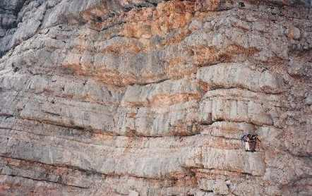
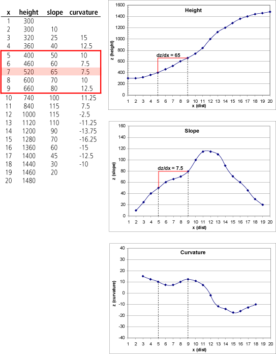
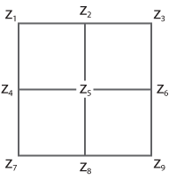
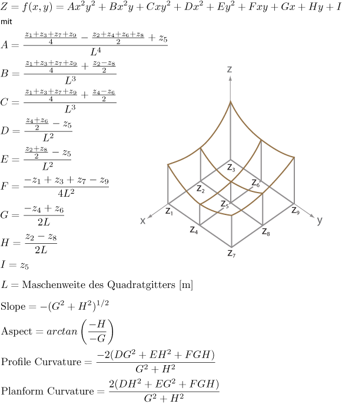

Das Phänomen des Geländes spielt in vielen Raumvorstellungen eine zentrale Rolle. Dies reicht von der kognitiven Wahrnehmung, z.B. der Frage “Was ist ein Wanderweg?” , bis hin zur oben skizzierten formalen und quantitativen Ableitung von Eigenschaften. In einem GIS wird die Information über die Form einer Geländeoberfläche in der Regel aus Höheninformationen abgeleitet. Diese Höheninformationen werden in einem Digitalen Geländemodell (DGM) gespeichert. Digitale Geländemodelle bestehen zunächst nur aus einer spezifischen Höheninformation für einen definierten Raumausschnitt (Rasterzelle, Punkt, Polygon). Aus dieser Primärinformation werden zahlreiche Zusatzinformationen abgeleitet. Am Beispiel von Hangneigung, Exposition und Krümmung soll im Folgenden skizziert werden, wie die Ableitungen mit Hilfe von Funktionen berechnet werden. Entscheidend ist dabei weniger die verwendete Mathematik als vielmehr die resultierende Information, die für die unterschiedlichsten Fragestellungen zur Verfügung steht.

Hangneigung
Auf einer (Gelände-)Fläche ist die Neigung (auch: Hangneigung) an einem Punkt durch die Tangentialebene gegeben. Die steilste Neigung in dieser Tangentialebene wird als Hangneigung bezeichnet. Die Neigung kann aus den Ableitungen der Oberfläche in Richtung der x-Koordinate und in Richtung der y-Koordinate berechnet werden.
Um die Neigung aus einem Höhenmodell zu berechnen, benötigt man also ein Verfahren, mit dem die Ableitungen aus den Höhenwerten geschätzt werden können. Die gebräuchlichste Art, dies für ein gitterbasiertes Geländemodell zu tun, ist ein “GIS-Dinosaurier” und unter dem Namen „Finite Differenzen“ bekannt Horn (1981).
Um das Prinzip der Finiten Differenzen zu erläutern, soll zunächst auf den eindimensionalen Fall eines Profils (statt einer Fläche) zurückgegriffen werden. Die folgende Abbildung zeigt, wie durch Quotientenbildung der Differenzen in der Höhe (dz) und in der Ebene (dx) zunächst die erste Ableitung (Steigung) und daraus die zweite Ableitung (Krümmung) geschätzt werden kann. Als Schrittweite in x-Richtung wird in diesem Fall 4 gewählt, d.h. es wird die endliche Differenz bezüglich der beiden zweiten Nachbarn links bzw. rechts des zentralen Punktes gebildet. Diesem zentralen Punkt wird dann der Wert der Ableitung zugeordnet. In der Abbildung sind der Zentralpunkt sowie dz und dx entsprechend rot markiert.

Für den zweidimensionalen Fall einer Oberfläche gibt Horn (1981) die Formeln zur Schätzung der Neigung mittels finiten Differenzen:
mit:
Die Nummerierung der Punkte in der Nachbarschaft 3-3 um den Zentralpunkt (z5) zur Bildung der Differenzen ist in der folgenden Abbildung dargestellt. In den obigen Formeln der finiten Differenzen ist zu beachten, dass die Differenzen, die durch den Zentralpunkt gehen, doppelt gewichtet werden.

Exposition
Unter Exposition (engl. aspect) versteht man die Richtung (im Uhrzeigersinn von Norden = Azimut) der steilsten Neigung der Tangentialebene oder einfacher die Ausrichtung des Hanges zur Himmelsrichtung. Zur Berechnung werden wiederum die Ableitungen in x- und y-Richtung benötigt, wie sie bereits zur Berechnung der Hangneigung gebildet wurden Horn (1981):
mit
Außerdem muss für die Berechnung unterschieden werden, ob die Werte dieser Ableitungen negativ, null oder positiv sind.
Krümmung
Die Kurvatur oder Krümmung ist die zweite Ableitung einer Oberfläche an einem bestimmten Punkt in einer bestimmten Richtung. Bei digitalen Geländemodellen sind insbesondere die Profilkurvatur (Kurvatur in Richtung der steilsten Neigung) und die Plankurvatur (Kurvatur in Richtung der Höhenlinie) von Interesse. Die Kurvaturwerte sind bei konvexen (erhabenen) Formen negativ und bei konkaven (vertieften) Formen positiv.
